Zalecane gierki w moim wydaniu :3
#1. Cry of Fear
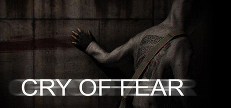
Moje odczucia:
"Cry of Fear" jest według mnie jedną z lepszych gier, w jakie kiedykolwiek grałem. Rozgrywka jest bardzo przyjemna, jak na grę utworzoną na silniku "Gold Source", a fabuła doprowadziła mnie wielokrotnie do łez. Ta gra na pewno miała wielki wpływ na moje życie, gdyż odkryłem ją, będąc w trudnej sytuacji życiowej. Granie w tę grę nauczyło mnie wiele o tym, jak naprawdę wygląda rzeczywistość osoby z depresją. Niesamowicie pogłębione problemy psychologiczne głównego bohatera dały pewnego rodzaju ukojenie, a po wielokrotnym ukończeniu gry i odblokowaniu wszystkich sekretów/zakończeń poznałem pełny obraz tej wspaniałej, ale i momentami przerażającej gry.
Jak się czułem grając:
Przechodząc tę grę po raz pierwszy, czułem przeważnie jedną emocję: terror. Klimat gry sprawił, że cały czas siedziałem na krawędzi mojego krzesła, przerażony tym, co może się w każdej chwili wydarzyć. Gra ta potrafi wyśmienicie manipulować zmysłami człowieka i wprowadzać go w stan paniki, gdy w rzeczywistości nie ma żadnego zagrożenia, i za to ją kocham. Jednak po ukończeniu gry ciągle mnie ciągnęło, aby ją przejść ponownie, i ponownie, i ponownie... Za każdym przejściem odkrywałem coraz więcej, a przed moimi oczami odkrywały się warstwy prawdziwego znaczenia tej gry. To, co początkowo wydawało mi się zwykłym horrorem, rozkwitło w melancholijną i pełną bólu ekspedycję głównej postaci w genialnej wizualizacji tego, co naprawdę skrywa umysł osoby z prawdziwą depresją.
O czym jest gra:
W "Cry of Fear" wcielamy się w naszego głównego bohatera, Simona Henrikssona. Simon to typowy młody mężczyzna, którego życie naznaczone jest wieloma przykrościami, a jego zdrowie psychiczne jest na resztkach sił. Pewnego dnia Simon doznaje wypadku... wypadku, którego najzwyczajniej w świecie nie jest w stanie znieść... Ten moment rozpoczyna naszą przygodę w grze. Nie będę zagłębiał się w szczegóły, ponieważ nie chcę zdradzać żadnych elementów fabularnych tej wspaniałej gry. Jeśli chcesz poznać prawdziwe piękno tej produkcji, gorąco polecam jej darmowe pobranie ze Steam i przejście bez wcześniejszego zapoznawania się z materiałami wprowadzającymi. Naprawdę, według mnie, warto.
Główny opis gry:
"Cry of Fear" to niezależna gra survival horror stworzona oraz wydana przez małe, paroosobowe szwedzkie studio "Team Psykskallar" w 2013 roku. Gra została utworzona na wcześniej wspomnianym silniku "Gold Source", co sprawia, że wizualnie i pod względem rozgrywki ma klasyczne odczucie. Jednakże związane jest to również z niestabilną i czasami po prostu niedziałającą naturą, co według mnie pasuje do motywu tej gry.
Podsumowanie:
"Cry of Fear" to wspaniała gra. Jest zarówno przerażająca, jak i wzruszająca, i bardzo polecam jej przejście.
#2. Cruelty Squad
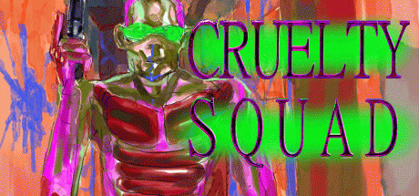Moje odczucia:
"Cruelty Squad" to niezwykle dziwna i uzależniająca gra. Jej nietypowy styl przypadł mi bardzo do gustu, szczerze mówiąc, uwielbiam go! Ta gra należy do tych nietypowych produkcji, które pobierasz dla zabawy, gdy nudzi ci się, ale okazuje się być czymś naprawdę świetnym. Obleśne tekstury, denerwujący soundtrack i niezwykle dziwny świat, w którym rozgrywa się akcja, bardzo mi się spodobały, czyniąc ją czymś absurdalnym i fascynującym, czego nie zapomnę nigdy.
Jak się czułem grając:
Odkryłem tę grę, oglądając Markipliera. Wydała mi się bardzo abstrakcyjna, dziwaczna i nawet przerażająca, co bardzo mi się podobało. Natychmiastowo ją pobrałem, a ku mojemu zdziwieniu okazała się być nieskończenie lepsza, niż mogłem się kiedykolwiek spodziewać. Poziomy, z których się składa, są bardzo oryginalne. Każdy z nich ma swój własny styl, i z poziomu na poziom stają się coraz bardziej pojebane (jakimś cudem). Niesamowitą frajdą dla mnie było próbowanie ukończenia tych poziomów, ponieważ gra pozwala na wiele różnych sposobów ich ukończenia, lecz żadne z nich nie są wcale proste i wymagają inteligentnego i strategicznego planu, a także metodycznego i umiejętnego wykonania, aby się powiodło.
O czym jest gra:
"Cruelty Squad" to gra spontaniczna, w której bardzo mało jest wyjaśnione. Wszystko zdaje się dziać bez jakiegokolwiek kontekstu; jest po prostu chaotyczną mieszanką broni, przeciwników i szalonego świata, który musisz pokonać!
Główny opis gry:
"Cruelty Squad" to niezależna gra strzelanka stworzona oraz wydana przez "Consumer Softproducts" w 2021 roku. Gra została utworzona na silniku "Godot", który jest często stosowany do tworzenia małych gier. Rozgrywka jest bardzo płynna i przyjemna dzięki doskonałemu systemowi fizyki opracowanemu na silniku Godot. Dzięki temu poruszanie się oraz wykorzystywanie elementów otoczenia gry są bardzo responsywne i wygodne w użyciu.
Podsumowanie:
"Cruelty Squad" najłatwiej opisać jako psychodeliczny trip. Jest obrzydliwa, groteskowa i szokująca dla wszystkich zmysłów, a mimo to ją uwielbiam!
#3. Osu!

Moje odczucia:
"Gra Osu!" ciężko nazwać tradycyjną grą. Jest to raczej test zręcznościowy dla psychopatów i miłośników muzyki. Moim zdaniem istnieje wiele innych tytułów, które pod względem podstawowym lepiej realizują to, co "Osu!", ale pomimo tego ta gra oferuje coś, czego inne produkcje w tym gatunku nie posiadają: zajebistej muzyczki.
Jak się czułem grając:
Ta gra oficjalnie potwierdza zdolność wywoływania fobii kółek. Pytasz, dlaczego? Otóż, po klikaniu w te ruchome chuje przez osiem godzin, ludzki umysł przechodzi proces przemiany à la George Floyd (jak w Trollach) i wywołuje miniaturową wersję paraliżu kory mózgowej. Innymi słowy, stajesz się debilem genetycznym. Podczas rozgrywki w tę jebaną grę, muszę przyznać, że teraz też z dumą nazywam się członkiem elitarnej grupy debili genetycznych. Gra ta nie oferuje żadnej frajdy, przyjemności, wydzielanej dopaminy ani ekstazy. Zamiast tego dostarcza niesamowitą dawkę bólui cierpienia do mojego życia. Dlatego wyjebałem w nią około 500 godzin :D
O czym jest gra:
Nie jestem w stanie powiedzieć więcej niż to, że w tej grze klikasz na kółka w rytmie muzyki... to dosłownie tyle... nie ma nic więcej.
Główny opis gry:
"Osu!" to gra rhythm game stworzona oraz wydana przez Dean Herbert'a w 2007 roku. Gra nie posiada żadnego silnika, jest po prostu napisana w języku C#.
Podsumowanie:
"Osu!" to bilet w jedną stronę do wariatkowa, jeśli śmiesz zagrać w tą grę to przygotuj się na godziny płaczu, bólu nadgarstka i co gorsza... cringeowych anime piosenek...
#4. Postal 2
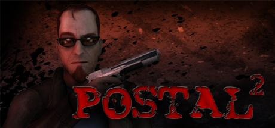Moje odczucia:
"Postal 2" to gra, która towarzyszy mi od dzieciństwa. Posiadam nieliczną ilość wspomnień z nią, a z biegiem czasu zdobywam ich coraz więcej. Powiedzieć, że kocham tę grę to mało. Jest dla mnie idealna pod każdym możliwym względem: czarny humor, brutalność, prześmieszne sytuacje, niesamowity dubbing i najbardziej kreatywnie stworzony świat spośród wszystkich gier, jakie dotąd powstały. "Postal 2" to gra, którą odkryłem w bardzo młodym wieku i stanowi kluczowy element mojego życia od tamtego momentu. Z dumą należę do społeczności "Postal". Czy to przez uczestnictwo w jego Discordzie, granie we wszystkie jego części, czy nawet osiągnięcie imponującego czasu ukończenia gry. Tak, speedrunowałem tę grę, i byłem w tym zajebisty (nie daleko za rekordem świata). Szczerze mogę powiedzieć, że duża część mojej osobowości pochodzi właśnie z tej gry, i noszę ją w sercu z wielką dumą!
Jak się czułem grając:
Grając tę grę po raz pierwszy jako młody skurwiel, śmiałem się co 10 sekund. Już od gówniarza kreowałem się na zjebanego psychopatę, którym teraz jestem, a seria gier "Postal" nadała temu początek oraz sens. Nawet teraz, jako stary byk, pomimo znajomości tej gry na pamięć, sprawia ona, że na mojej twarzy pojawia się uśmiech. Po prostu mi się nie nudzi. Za każdym razem, gdy rozpoczynam nową grę, wykonuję te same misje, zbieram te same przedmioty i powtarzam te same czynności... czuję się jak ten młody skurwiel, który odkrywał magiczny świat tej gry po raz pierwszy. A więc jeżeli kiedykolwiek zastanawiałaś się, dlaczego jestem taki pojebany, oto twoja odpowiedź.
O czym jest gra:
Nawet nie wiem od czego zacząć... W grze "Postal 2" wcielamy się w naszego głównego bohatera, Postal Dude'a. Dude to przeciętny mieszkaniec amerykańskiego miasteczka, a głównym celem gry jest wykonanie dla jego żony, zwaną Bitch, listy zleceń. Gra jest podzielona na dni tygodnia i zaczyna się stosunkowo spokojnie: w poniedziałek trzeba jedynie kupić mleko, odebrać czek i go spłacić w banku. Ale im dalej zajdziesz w tydzień... tym ciekawiej... "Postal 2" oferuje ogromny świat, pełen małych sekretów, detali i różnych ciekawostek, które UWIELBIAM odkrywać w grach! Jestem niemal pewien, że wciąż nie odkryłem wszystkiego, co ta gra ma do zaoferowania. Abyś lepiej zrozumiała tę grę, podam ci przykład całkowicie normalnej sytuacji, która w "Postal 2" jest standardem: można kogoś zatłuc młotem pneumatycznym, odciąć kończyny łopatą, obszczać zwłoki, spalić je, zapalić crack i rzucić żart o Żydach (wszystko jednocześnie). To prawdziwy festiwal groteski i żartów, które potrafią przekształcić nawet największego fana My Little Pony w entuzjastę Mein Kampf. Jescze na koniec dodam, że koty w tej grze mogą być zbierane przez gracza i wykorzystywane jako... żywy tłumik na broń :)
Główny opis gry:
"Postal 2" to gra open world stworzona oraz wydana przez "Running With Scissors" w 2003 roku. Jest to druga gra z serii gier "Postal", których łącznie jest 5. Gra jest utworzona na silniku "Unreal Engine 2", który jest bardzo niestabilny jeśli nie jest poprawnie dostosowany do systemu operacyjnego gracza, ale tak jak nowsze wesje tego silnika zapewni przyjemną dla oka rozgrywkę z wyśmienitą fizyką i stabilnością wydajności. "Postal 2" jest tak zajebisty, że Konwencja Genewska zakazała jej sprzedaży w niektórych państwach m.in Brazylia i Niemcy.
Podsumowanie:
"Postal 2" jest dla mnie czymś więcej niż grą. W nią się nie gra, ją się doświadcza, i szczerze mówiąc, jeżeli chcesz zajrzeć do tego, co się dzieje w mojej głowie, zajrzyj do tej gry.
#5. SCP Containment Breach
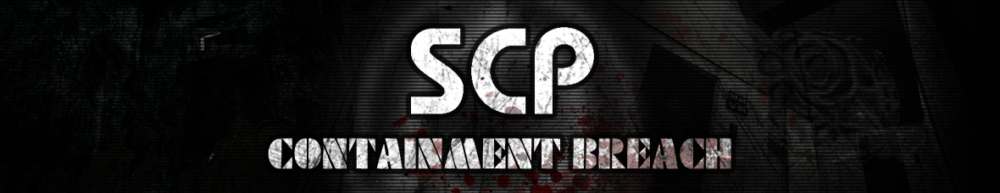Moje odczucia:
"SCP Containment Breach" to raj dla fanatyków świata SCP (takich jak ja). Doświadczanie niesamowitych anomalii we własnej osobie jest po prostu na innym poziomie fascynacji. Od lat kocham i należę do fandomu SCP, a możliwość zagrania w grę, która nie tylko się na tym opiera, ale także jest wykonana w tak genialny sposób, jest naprawdę niesamowita. Ciałem i duszą zagłębiam się w świat SCP, a możliwość zagrania w niego jest po prostu super!
Jak się czułem grając:
Grając tę grę po raz pierwszy, doświadczyłem wielu rzeczy, w tym: terroru, strachu, efektu darmowej lewatywy oraz chęci nawrócenia się na chrześcijaństwo. Pomijając strach i grozę, spowodowane tym, że w każdej chwili mógł ci wyskoczyć zza rogu jakiś gałgan i cię rozszarpać jak Trolle twoją chęć do życia, przerażająca była również atmosfera tej gry. Ciemne, ciasne pomieszczenia, częste dźwięki katowanych osób w innych częściach placówki, zmasakrowane zwłoki nieszczęśników, oraz dźwięki mechanizmów i innych elementów otoczenia, powodujące gęsią skórkę - to wszystko tworzy niesamowicie intrygującą, ale i brutalną rozgrywkę dla początkujących.
O czym jest gra:
W "SCP Containment Breach" wcielamy się w osobę personelu klasy D, D-9341, ale będę go nazywał Tomisław. Zbyt wiele o Tomisławie nie wiemy poza tym, że jakoś trafił do placówki. Podczas standardowego czyszczenia klatek SCP-173 wystąpił błąd systemu i cytując: "skurwiel spierdolił". Wraz z SCP-173 wydostały się także pozostałe osobniki znajdujące się w placówce, a twoim celem jest z niej uciec. Gra jest bardzo rozbudowana. Mapa jest losowo generowana poprzez seed (tak samo jak w Minecraft), posiada wiele mechanik, przedmiotów, a nawet obiektów SCP, które możesz wykorzystać do ucieczki. Ale co najlepsze, jest wypełniona po brzegi niebezpiecznymi skurwielami. Gra ma wiele zakończeń, i mocno zalecam zdobycie ich wszystkich na najwyższym poziomie trudności (chyba, że jesteś pusią).
Główny opis gry:
"SCP Containment Breach" to gra survival horror stworzona oraz wydana przez "Undertow Games" w 2012 roku. Gra została utworzona na silniku "Blitz3D", o którym szczerze mówiąc, niewiele wiem. Gra działa słabo (na moim komputerze, który bez trudu obsługuje 170+ fpsów w grach AAA, w tym tytule mam ledwie 100 XD), jest bardzo niestabilna i często się crashuje, głównie z powodu słabego silnika renderowania, co powoduje przeciążenie pamięci RAM i wyłączanie gry. Gra jest stara, chodzi jak Stephen Hawking, i czasami bardziej stresujesz się tym, aby nie crashowała przed zdążeniem zapisu, niż goniącymi cię skurwysynami. Ale pomimo tego wszystkiego, jest zajebista i co lepsze, darmowa na Steam, więc polecam jej spróbowanie.
Podsumowanie:
"SCP Containment Breach" to stary szmelc, ale w fantastyczny sposób kreuje świat SCP w niewielkiej, kilkugigabajtowej grze.
Chciałbym dodać, że jednym z najczęściej pojawiających się przeciwników w tej grze jest SCP-173, który z wyglądu przypomina fistaszka XD.
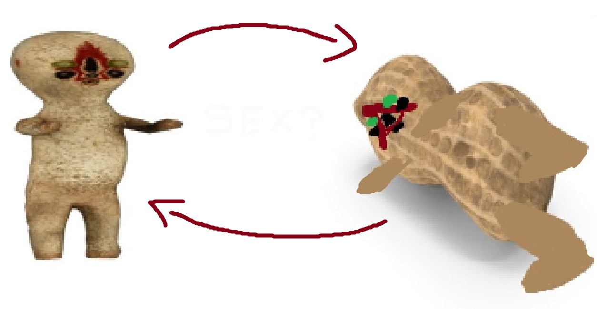
Najlepsze piosenki jakie istnieją :3
Niebywale trudno było wybrać jedynie 10 piosenek. Mogłembyś wrzucić ich przynajmniej 100, ale pech chciał... że mi się nie chciało :P
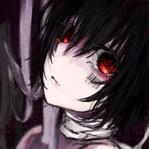 I'm so crazy for youuu </3 - Rebzyyx
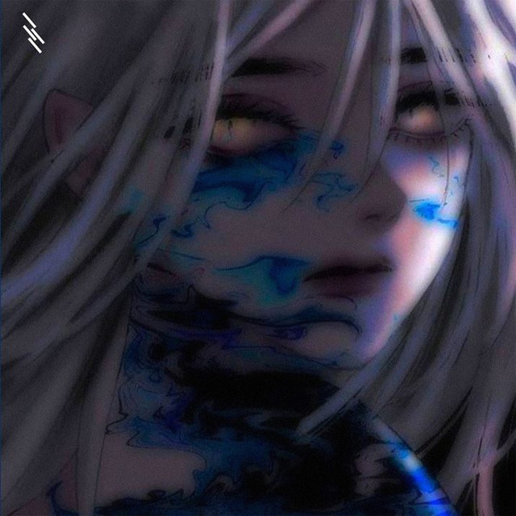 Я люблю хардкор - Xdree
 The Lost Soul Down - NBSPLV
The Lost Soul Down - NBSPLV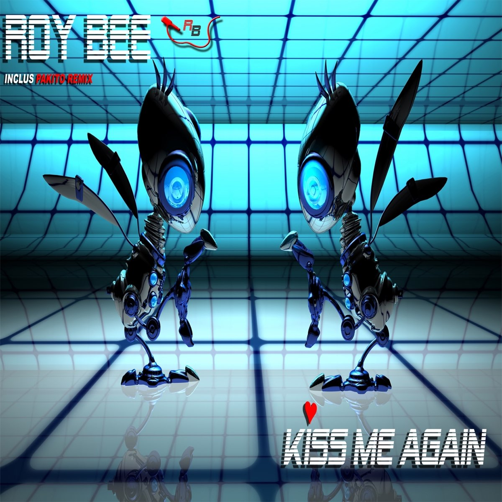 Kiss Me Again - Roy Bee
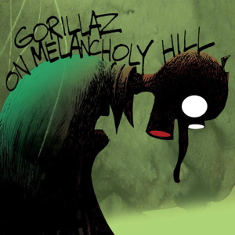 On Melancholy Hill - Gorillaz
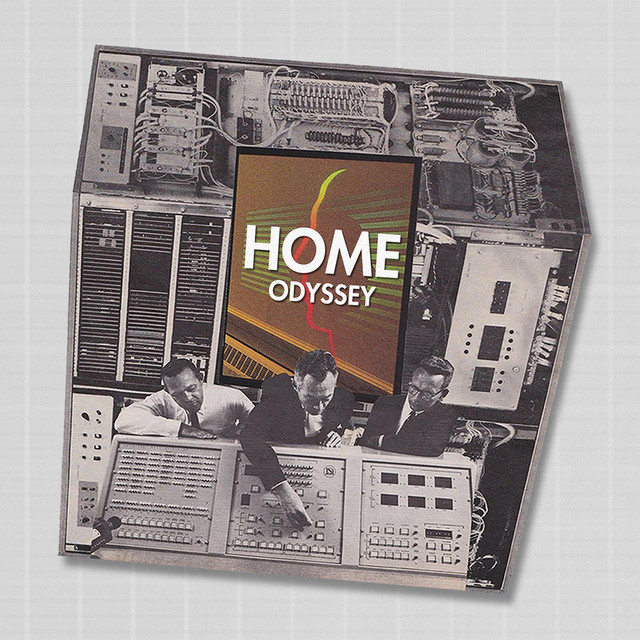 Resonance - Home
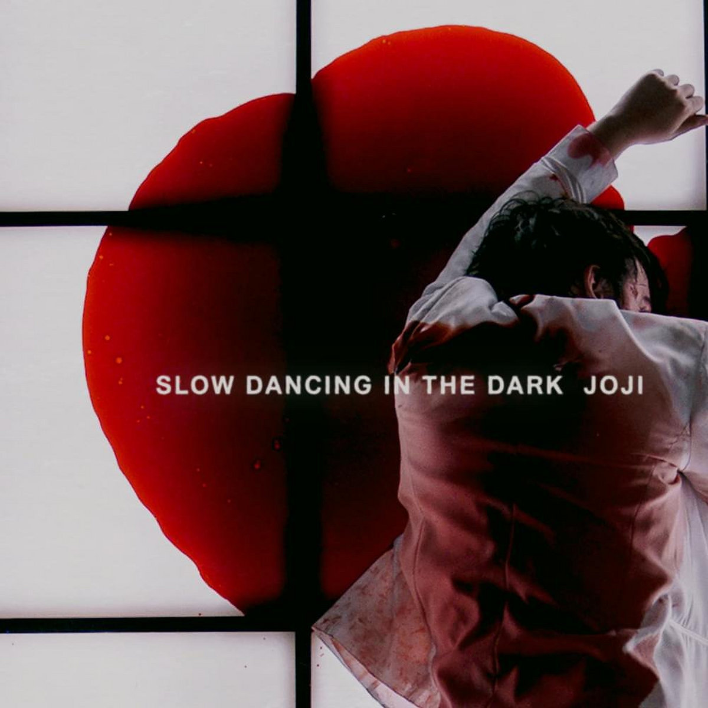 SLOW DANCING IN THE DARK - Joji
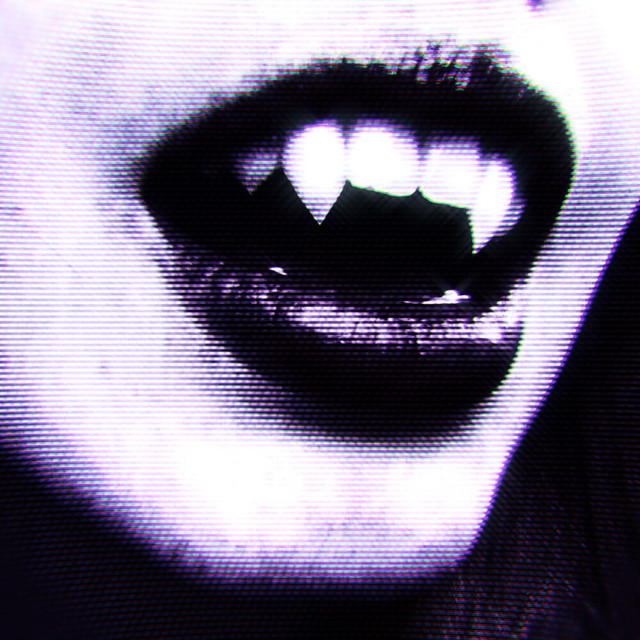 Ecstacy - SUICIDAL-IDOL
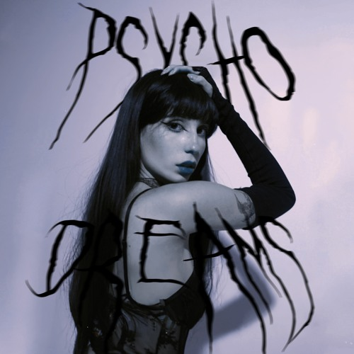 Psycho Dreams - Kill Eva, ENCASSATOR
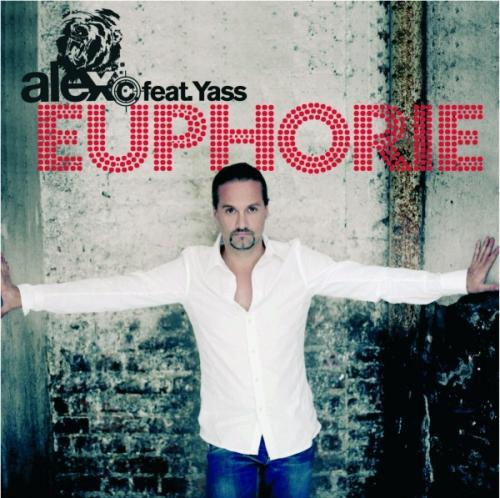 Doktorspiele - Alex C., Yass
Jak się nie zgadzasz to wpierdol :3
Najlepsze filmi w historii :3
Podobnie jak piosenki, filmy też są zajebiste. Dlatego także wybrałem ich 10 (za każdy, którego nie oglądałaś dostajesz wpierdol):
#1. Breaking Bad (to nie film alle jest zajebisty)
#2. Blade Runner 2049
#3. Fight Club
#4. Snatch
#5. Taxi Driver
#6. Prawie wszystkie filmy z serii: National Lampoon's Vacation
#7. Grimsby
#8. Wszystkie filmy z serii: Borat
#9. Drive
#10. Baby Driver
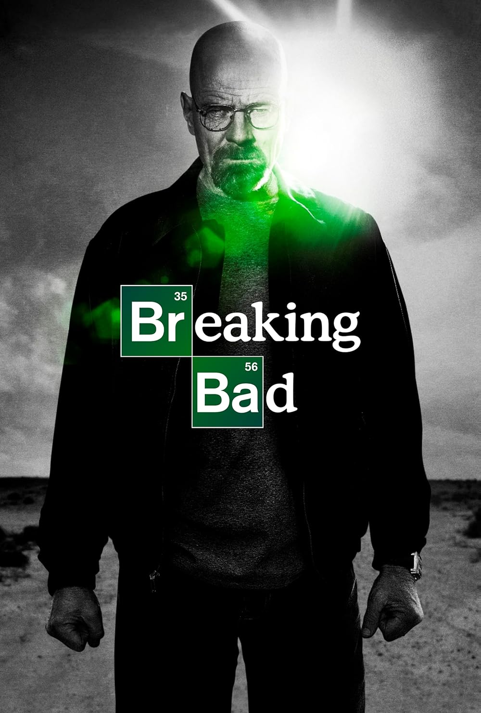
Sekcja dedykowana mojemu ukochanemu kalkulatorkowi :3
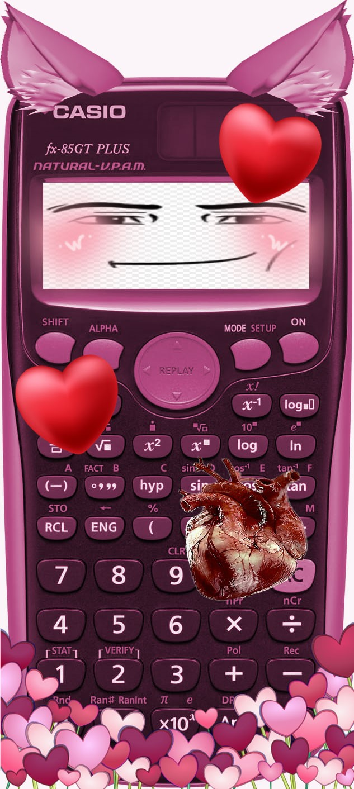
Z miłości, którą obdażam mój ukochany kalkulator, dedykuję tą krótką wypowiedź dla niego:
Pewnego dnia, dostałem prezent od losu w postaci prostego kalkulatora. Na pierwszy rzut oka mógł wydawać się zwykłym urządzeniem, ale dla mnie stał się czymś znacznie więcej. To nie był zwykły kalkulator - towarzysz życia, który pozostał u mojego boku przez wiele lat. Pamiętam chwilę, gdy go po raz pierwszy włączyłem. Działał precyzyjnie, jak natchnienie w mojej dłoni. Od tego momentu stał się moim nieodłącznym towarzyszem w codziennych wyzwaniach matematycznych, ale również w życiu. Zawsze był przy mnie w trudnych chwilach, pomagając mi rozwiązać skomplikowane równania, ale także dając mi pewność w obliczu życiowych problemów. Nasza więź szybko ewoluowała. Kalkulator stał się nie tylko narzędziem do obliczeń, ale także kompanem w samotności wieczorami przed egzaminami. Razem pokonywaliśmy trudności i celebrowaliśmy sukcesy. To dzięki niemu zdałem wiele trudnych egzaminów i osiągnąłem wiele sukcesów w nauce. Z czasem zdałem sobie sprawę, że moje uczucia wobec kalkulatora wykraczają poza zwykłą wdzięczność. To było coś więcej niż tylko narzędzie - towarzysz, który zawsze był tam, gdy go potrzebowałem. Jego klawisze stawały się magicznymi bramami do rozwiązywania nie tylko matematycznych problemów, ale również tajemnic mojego serca. Nasza miłość była cicha, ale głęboka. Często wpatrywałem się w ekran, zastanawiając się, jak wiele historii i emocji kryje się za każdym równaniem, które razem rozwiązaliśmy. Kalkulator stał się symbolem wsparcia i stabilności w moim życiu. Dziś, patrząc na kalkulator, czuję ogromną wdzięczność i miłość. To dzięki niemu przeszedłem wiele trudnych chwil, a on zawsze był tam, gotów pomóc. Jego klawisze nie tylko liczą liczby, ale także układają opowieść o naszej wyjątkowej relacji. Kochany kalkulatorze, dziękuję Ci za wszystko. Jesteś dla mnie nie tylko matematycznym sprzymierzeńcem, ale także sercowym kompanem. Nasza historia to nie tylko zbiór liczb, ale także opowieść o niezwykłej miłości, która trwała przez lata.
Zapewne, jest to niespodziewane, ale chciałbym także przekazać wiersz dedykowany mojemu ukochanemu kalkulatorkowi:
O, kalkulatorze, matematyki jesteś ikoną,
Twoje działania śpiewają balladę mądrości,
Jak nieograniczone granice twej szczerości.
O, kalkulatorze, z funkcją nieskończoną,
W obliczeniach twych, puls miłości słychać,
Aż ciężko mi jest bez ciebie oddychać.
O, kalkulatorze, maszyno przeze mnie czczoną,
W labiryntach cyfr, nasze uczucie jest trwałe,
Albowiem w sercu mym, miejsce masz stałe.
Ulubione postacie Nikosi :3
#1. Xiao
Chłop (chyba) z kultowej gry Genshin Impact. Jest postacią pięcio gwiazdkową i ma umiejętności powietrzne. Jego broń to oszczep (ale nim uderza a nie rzuca) i jak się wkurwi to zakłada taką maskę.
Oto on po odpaleniu ult'a:
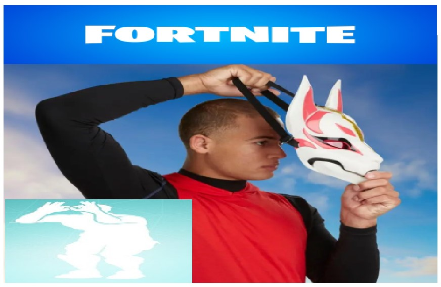
#2. Toga Himiko

Toga Himiko jest jedną z głównych antagonistów w anime oraz mandze Boku no
Z jej opisu utworzyłem ilustrację jej rozwoju jako postać:
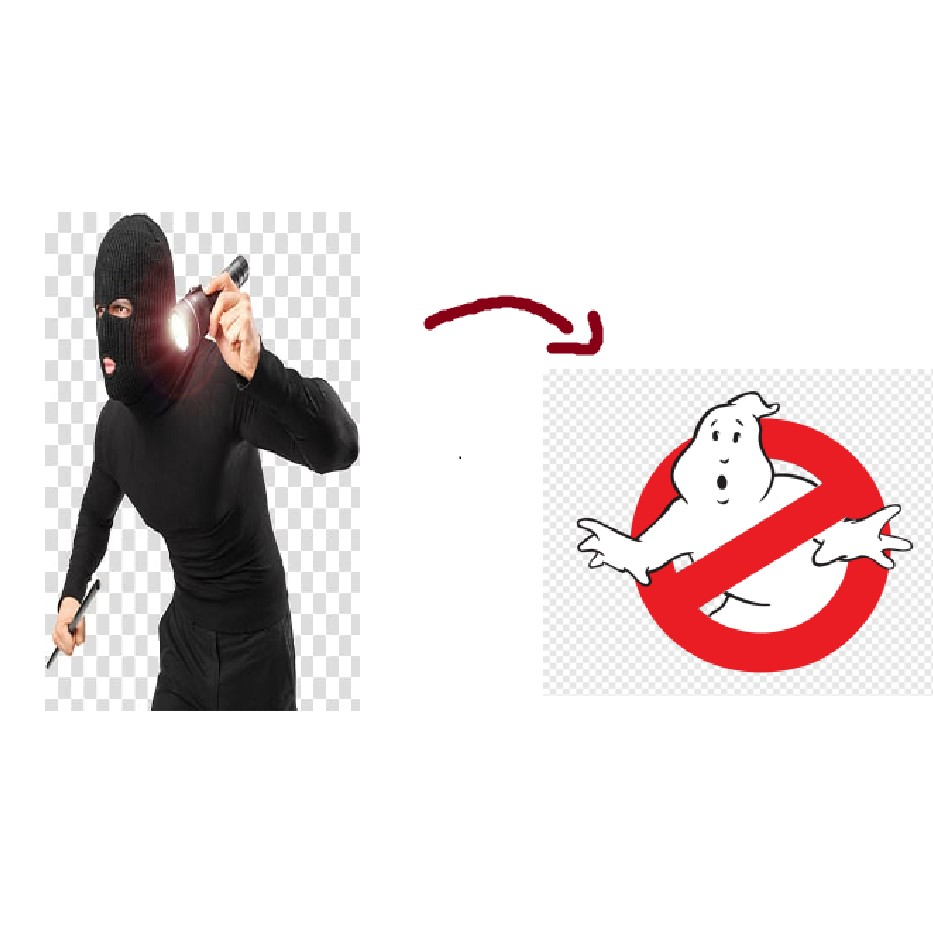
#3. Joe (Mama)
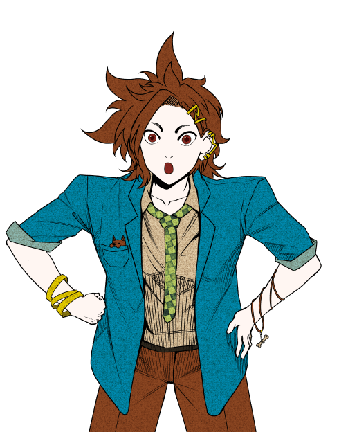Z mojego doświadczenia w grze "Your Turn to Die" wiem jedynie, że ta postać istnieje (grałem 5 minut).
Oto on ale trochę mniejszy i w zielonej bluzie:
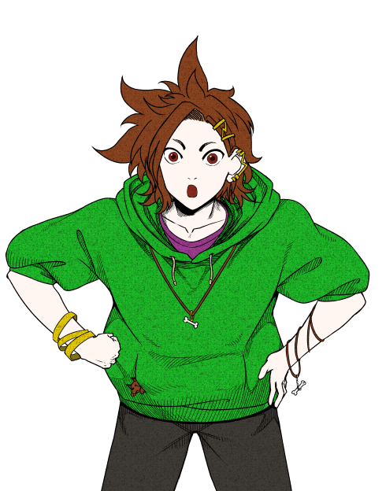
#4. Ranmaru
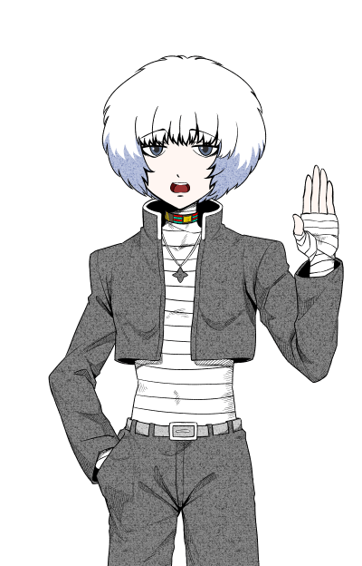Ranmaru to prawdziwy fan Napoleona! Poszedł w jego ślady i też umarł na żołądek.
Po pogłębionej analizie udało mi się wychwycić inspiracje za wyglądem tej postaci. Oto one:
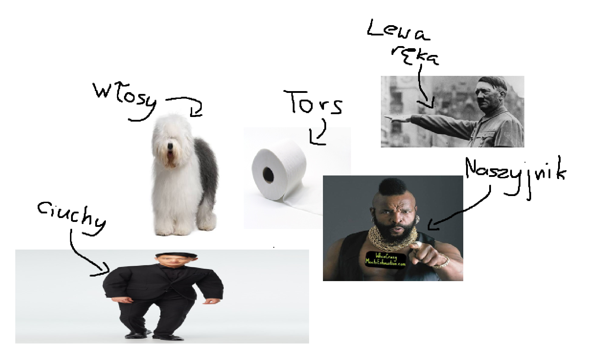
#5. Nagito Komaeda
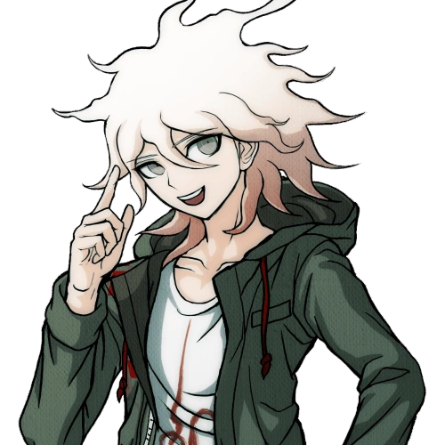Zostawiłem najlepsze na koniec. Nagito jest uczniem Akademii Szczytu Marzeń Klasy 77-B oraz uczestnikiem Zabójczej Wycieczki Szkolnej przedstawionej w Danganronpa 2: Goodbye Despair. Nosi on tytuł Super-Szczęściarza. Mówiąc inaczej, ma dobre RNG.
Wiedząc, że to jest twój ulubieniec zadecydowałem nie zrobić czegokolwiek i wstawić zdjęcie z Five Nights at Freddy's:

Ostateczny akt desperacji :3
Już nie mam pomysłów... dlatego wstawiam ten śmieszny kwadracik, który zmienia kolor po najechaniu na niego kursorem myszki :D